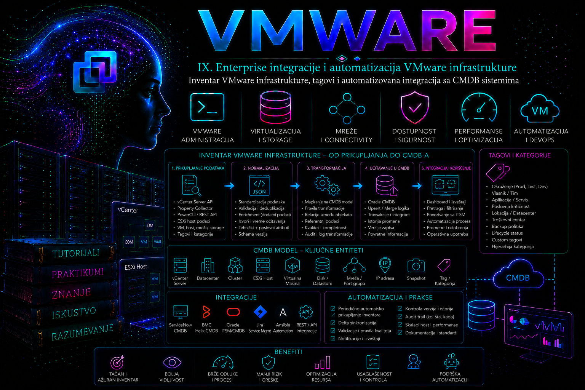

VMware

Prethodne lekcije izgradile su tehničku sliku vSphere okruženja: virtuelne mašine, hostove, klastere, mreže, skladište, zaštitu podataka, monitoring i sistematičnu dijagnostiku. Ova lekcija od tih pojedinačnih činjenica gradi upravljiv sistem znanja. Administrator više ne pita samo „šta trenutno postoji u vCenter Server-u”, već i: ko je za objekat odgovoran, kom poslovnom servisu pripada, koliko je kritičan, koja pravila zaštite mora da prati, iz kog izvora podatak potiče i kada je poslednji put potvrđen.
Inventar nije Excel tabela, izvoz iz vSphere Client-a niti kopija ekrana. To je kontrolisan skup konfiguracionih stavki, njihovih identiteta, atributa i međusobnih veza. Tagovi su standardizovani metapodaci uz vSphere objekte, a CMDB (Configuration Management Database) povezuje tehničko stanje sa poslovnim kontekstom i procesima promene. Vrednost nastaje tek kada su granice odgovornosti jasne, razmena idempotentna, kvalitet merljiv, a svaka promena dokaziva.
Ovo je zato i tehnička i upravljačka lekcija. Pogrešna vrednost kategorije BackupPolicy može biti ozbiljnija od pogrešno napisanog opisa: automatizacija može izabrati neodgovarajuću zaštitu. Inventar kome se ne veruje vraća organizaciju ručnim proverama; inventar kome se nekritički veruje može automatizovati pogrešnu odluku. Cilj je pouzdana sredina između ta dva rizika.
Ishodi učenja i granice lekcije
Po završetku lekcije čitalac će moći da projektuje model VMware inventara, razlikuje tehničke i poslovne izvore istine, odabere stabilne identifikatore, oblikuje kategorije i tagove, prikupi podatke pomoću VCF PowerCLI-ja i vSphere API-ja, pripremi staging i CMDB sinhronizaciju, uvede validaciju, audit i rollback i dijagnostikuje tipične neusaglašenosti. Lekcija 40 koristiće takvu klasifikaciju za pripremu infrastrukture za Kubernetes platforme; lekcije 41–48 dalje će je povezati sa lifecycle-om, identitetom, hardening-om, automatizacijom, kapacitetom, promenama, disaster recovery-jem i incidentima.
Ova lekcija ne propisuje proizvod jednog CMDB proizvođača niti tvrdi da je Oracle baza sama po sebi CMDB. Relaciona baza može biti podatkovna osnova prilagođenog rešenja, ali CMDB podrazumeva i model konfiguracionih stavki, veze, vlasništvo, discovery/reconciliation pravila, istoriju, kontrolu pristupa i procese upravljanja promenama.
Inventar, asset registar i CMDB nisu isto
| Pojam | Primarno pitanje | Tipičan sadržaj | Važno ograničenje |
|---|---|---|---|
| vSphere inventory | Koji objekti postoje i kako su organizovani? | vCenter, datacenter, folder, cluster, host, resource pool, VM, template, datastore, mreža | Prikazuje platformsku stvarnost, ali ne mora poznavati poslovni servis i vlasnika. |
| Inventar za administraciju | Koja je konfiguracija i operativno stanje? | Identiteti, CPU/RAM, diskovi, mreže, Tools, power state, snapshot-i, tagovi | Trenutni snapshot podataka bez istorije nije dovoljan za audit i trend. |
| IT asset registar | Šta organizacija poseduje, iznajmljuje ili plaća? | Nabavka, ugovor, garancija, licenca, trošak, životni ciklus | Asset i konfiguraciona stavka mogu se preklapati, ali nisu nužno isti objekat. |
| CMDB | Kako konfiguracione stavke i servisi zavise jedni od drugih? | CI klase, atributi, odnosi, vlasništvo, status, izvori, istorija | CMDB nije automatski autoritativan za svaki atribut; reconciliation mora čuvati granice izvora. |
Arhitektura pouzdanog toka podataka
Pouzdan tok razdvaja prikupljanje od odluke i upisa. Kolektor čita vCenter Server bez menjanja stanja. Sirovi zapis se čuva sa vremenom, izvorom i identitetom izvršavanja. Transformacija normalizuje tipove i vrednosti; validacija odbacuje ili stavlja u karantin zapise koji krše ugovor podataka. Staging omogućava poređenje sa prethodnim stanjem. Tek kontrolisana reconciliation faza odlučuje da li će CI biti kreiran, izmenjen, označen kao nestao ili ostavljen netaknut. Objavljivanje izveštaja i metrika dolazi posle uspešnog commit-a.
vCenter / drugi izvori
│
▼
read-only kolektor ──► sirovi snimak ──► normalizacija ──► validacija
│
▼
staging + diff
│
odobrena pravila ──►│
▼
CMDB merge/upsert
│
▼
audit, metrike, izveštaj
Ovakvo razdvajanje ograničava blast radius. Greška u parseru ne sme neposredno menjati produkcione tagove; nedostupan CMDB ne sme zahtevati ponovno čitanje svih izvora; neuspešan red u batch-u ne sme sakriti uspešne i neuspešne zapise. Svako izvršavanje dobija run_id, vreme početka i završetka, verziju šeme, broj pročitanih, prihvaćenih, odbačenih, kreiranih, izmenjenih i deaktiviranih objekata i sažetak grešaka.
Obuhvat inventara i model odnosa
Popis samo virtuelnih mašina nije enterprise inventar. Minimalni koristan model uključuje vCenter Server, datacenter, folder, cluster, ESXi host, resource pool, VM ili template, datastore, datastore cluster, standardni ili distribuirani switch i port group. Po potrebi se dodaju Content Library, storage policy, alarm, backup objekat i poslovni servis. Ne treba prikupljati svako dostupno API polje: svako polje mora imati korisnika, značenje, dozvoljeni kvalitet, period osvežavanja i politiku zadržavanja.
| CI/objekat | Stabilni ključ u lokalnom kontekstu | Važne veze | Primer namene |
|---|---|---|---|
| vCenter Server | Instance UUID vCenter-a i kanonsko ime | upravlja datacenter-ima i njihovim objektima | razdvajanje istih MoID vrednosti iz različitih vCenter-a |
| VM | Config.InstanceUuid, uz izvorni vCenter; MoRef kao platformski locator | host/cluster, resource pool, folder, datastore, mreže, poslovni servis | kontinuitet uprkos promeni display name-a |
| ESXi host | host UUID/hardware UUID, uz vCenter | cluster, datastore, mreže, VM-ovi | kapacitet, lifecycle i incidentni uticaj |
| Datastore | platformski identitet i vCenter; gde je primenljivo storage identitet | hostovi, VM diskovi, datastore cluster | uticaj kapaciteta i dostupnosti |
| Mreža/port group | MoRef ili distribuirani identitet uz vCenter | switch, VM NIC, VLAN/segment | povezivost i bezbednosna zona |
| Poslovni servis | CMDB/service-catalog ID | aplikacije, VM-ovi, vlasnici, SLA | impact analiza i odgovornost |
Managed Object Reference (MoRef) pouzdano locira objekat unutar konkretnog vCenter Server-a, ali vrednosti poput vm-123 nisu globalne. Naziv je promenljiv atribut, ne primarni ključ. Za VM je Config.InstanceUuid vCenter-specifičan 128-bitni identifikator namenjen razlikovanju VM instanci, uključujući slučajeve sa istim SMBIOS UUID-om. U višestrukom vCenter okruženju bezbedan korelacioni ključ obično uključuje identitet izvornog vCenter-a i identifikator objekta. Kloniranje, restore, cross-vCenter migracija i ponovna registracija moraju biti eksplicitno testirani: nijedan pojedinačni identifikator ne treba proglasiti univerzalnim bez provere životnog ciklusa koji organizacija stvarno koristi.
Tehnički i poslovni podaci: ko je izvor istine
Tehnički atributi, kao što su CPU, RAM, power state, host, datastore, virtuelni uređaji i platformski identiteti, uglavnom pripadaju vCenter-u. Poslovne činjenice, kao što su vlasnik aplikacije, troškovni centar, kritičnost, datum povlačenja i odobreni SLA, nastaju u poslovnim procesima. Tag može izložiti odabranu poslovnu vrednost uz vSphere objekat, ali ne mora postati master te vrednosti. Najpre se projektuje matrica autoriteta, pa tek onda sinhronizacija.
| Atribut | Autoritativni izvor | Smer | Konflikt | Svežina |
|---|---|---|---|---|
| vCPU, RAM, power state | vCenter | vCenter → CMDB | vCenter pobeđuje; razliku auditirati | npr. 15–60 min, prema potrebi |
| ApplicationOwner | service catalog/CMDB | CMDB → odobren tag ili samo prikaz | ne prepisivati bez workflow odobrenja | po promeni ili dnevno |
| Environment | odobren tag model ili provisioning sistem | kontrolisano dvosmerno | karantin ako postoje dve SINGLE vrednosti | po promeni |
| BackupPolicy | backup katalog/politika | katalog → tag/CMDB | bez automatske zaštite dok je vrednost nevažeća | pre svakog policy ciklusa |
| IP adresa | IPAM za dodelu; vCenter/Tools za opaženo stanje | oba ka CMDB kao odvojena polja | ne stapati „dodeljeno” i „opaženo” | različit SLA |
Za svaki atribut treba čuvati najmanje source_system, source_object_id, observed_at, ingested_at, quality_status i, gde je korisno, confidence. NULL, prazna vrednost, „nije prikupljeno” i „nije primenljivo” nisu isto. Ako je vCenter privremeno nedostupan, odsustvo zapisa u novom batch-u nije dokaz da je VM obrisan.
Tagovi, kategorije i Custom Attributes
vSphere tag je kontrolisana vrednost unutar kategorije. Kategorija definiše semantiku, cardinality i tipove objekata kojima se tag može pridružiti. SINGLE znači najviše jedan tag iz kategorije po objektu; MULTIPLE dopušta više vrednosti. Ograničavanje associable object types sprečava besmislenu dodelu. Prazan skup tipova u API modelu znači da je kategorija primenljiva na sve podržane tipove, što je fleksibilno, ali šire nego što je često poželjno u produkciji.
Custom Attributes, u PowerCLI terminologiji dostupni i kroz anotacije, jesu stariji mehanizam slobodnijih parova ime–vrednost. Korisni su za nasleđene integracije i tekst koji nije kontrolisana klasifikacija, ali nemaju semantičku disciplinu kategorija i tagova. Folder organizuje objekte i delegiranje, naziv pomaže čoveku, a tag klasifikuje. Nijedan od ta tri mehanizma ne treba prisiljavati da obavlja posao druga dva.
| Mehanizam | Dobra upotreba | Loša upotreba | Kontrola |
|---|---|---|---|
| Naziv objekta | kratak operativni identitet | kodiranje vlasnika, SLA, backup-a i lokacije u dugom imenu | naming standard i jedinstvenost u definisanom opsegu |
| Folder | organizacija, pregled i deo permission modela | višedimenzionalna klasifikacija jednim stablom | jasna hijerarhija i ograničeno premeštanje |
| Tag | kontrolisana klasifikacija i policy selekcija | tajne, dugi slobodni tekst ili brzo promenljive metrike | kategorija, cardinality, dozvoljeni tipovi i data owner |
| Custom Attribute | kratak legacy podatak ili vrednost bez razumnog enumerisanog skupa | nekontrolisani sinonimi i poverljivi podaci | format, vlasnik i validaciono pravilo |
Projektovanje enterprise tag modela
Model počinje poslovnim pitanjem, ne komandama. Za svaku kategoriju dokumentuju se: stabilno ime i opis, svrha, vlasnik podatka, steward, cardinality, dozvoljeni tipovi objekata, dozvoljene vrednosti, obaveznost po CI klasi, izvor, smer sinhronizacije, korisnici podatka, posledica nepoznate vrednosti i proces izmene. Ime taga treba da bude stabilan kod; lokalizovani prikaz može postojati u katalogu, ali automatizacija ne sme zavisiti od proizvoljnog teksta.
| Kategorija | Cardinality | Primeri vrednosti | Objekti | Vlasnik |
|---|---|---|---|---|
| Environment | SINGLE | PROD, PREPROD, TEST, DEV, LAB | VirtualMachine, ClusterComputeResource | platform/service governance |
| BusinessCriticality | SINGLE | C1, C2, C3, C4 | VirtualMachine | business service owner |
| ApplicationOwner | SINGLE | stabilni timski ili kataloški ID | VirtualMachine | service catalog |
| BackupPolicy | SINGLE | GOLD, SILVER, BRONZE, NONE-APPROVED | VirtualMachine | data protection |
| SecurityZone | SINGLE | INTERNAL, DMZ, RESTRICTED | VM, cluster, datastore gde je smisleno | security/network |
| ComplianceScope | MULTIPLE | PCI, GDPR, INTERNAL-AUDIT | VirtualMachine | security/compliance |
| Lifecycle | SINGLE | BUILD, ACTIVE, RETIRE-PENDING, RETIRED | VirtualMachine, Template | change/configuration management |
Vrednost Unknown ne sme postati trajna kanta koja skriva dug. Ako je potrebna tokom migracije, mora imati vlasnika, rok i metriku smanjivanja. NONE-APPROVED je bezbednija od NONE jer govori da je izostanak politike eksplicitno odobren. Preimenovanje taga može slomiti skripte i izveštaje; ukidanje se vodi kao promena šeme: analiza potrošača, paralelni period, migracija dodela, validacija i tek zatim uklanjanje stare vrednosti.
Verzijski, proizvodni i licencni okvir
U aktuelnom Broadcom portfoliju dokumentacija koristi nazive VMware vSphere, VMware Cloud Foundation i VCF PowerCLI. Mnoge postojeće skripte i moduli i dalje nose VMware.PowerCLI i VMware.VimAutomation.* nazive, pa terminološka promena ne znači da stare komande treba naslepo zameniti. Uvek proveriti PowerCLI command reference za instaliranu verziju i API referencu koja odgovara ciljnom vCenter-u.
Tagging servis je deo vCenter funkcionalnosti; samostalni ESXi host nema isti centralni model kategorija i dodela. Dostupnost pojedinih API operacija, tipova objekata, privilegija i integracija zavisi od izdanja i verzije. vSphere Automation API pokriva tagging servis, dok Web Services API daje duboki objekatni inventar; VI/JSON je noviji JSON pristup delu vSphere objektnog modela i ne treba ga pretpostaviti na starijim vCenter verzijama. Za produkciju se pravi compatibility matrica: vCenter/ESXi build, API verzija, PowerCLI verzija, autentikacija i podržani endpoint-i.
Privilegije, identitet procesa i zaštita kredencijala
Kolektor treba da koristi namenski servisni identitet sa read-only privilegijama nad tačno definisanim korenom inventara i potrebnim pravom čitanja tagova. Pisac tagova je odvojen identitet sa užim, eksplicitnim privilegijama. CMDB nalog za staging ne mora imati pravo izmene produkcionih CI tabela; merge procedura može biti kontrolisana zasebnim nalogom. Time kompromitovanje jednog koraka ne daje automatski pristup celom toku.
- Kredencijale ne stavljati u skriptu, Git repozitorijum, komandnu liniju, CSV ili log; koristiti odobren vault i kratkotrajne tokene gde su podržani.
- Ne zaobilaziti proveru TLS sertifikata kao trajnu „popravku”. Uvesti poverenje u odgovarajući CA lanac i proveriti ime i vreme.
- Logovati identitet, cilj, operaciju i rezultat, ali ne session cookie, token, lozinku niti nepotrebne lične podatke.
- Read-only prikupljanje i state-changing dodelu tagova izvršavati kroz različite poslove, naloge i odobrenja.
- Testirati opoziv i rotaciju kredencijala; „servisni nalog koji se ne dira” nije pouzdan dizajn.
Prikupljanje inventara pomoću VCF PowerCLI-ja
Sledeći primer izvršava se na administrativnoj radnoj stanici sa kompatibilnim PowerShell-om i PowerCLI modulima. Komande do formiranja JSON-a su read-only. Connect-VIServer uspostavlja sesiju i proverava sertifikat prema lokalnoj PowerCLI politici. Ne postavljati globalno ignorisanje nevažećih sertifikata kao produkcionu praksu.
$server = "vcsa01.example.internal"
$credential = Get-Credential
$vi = Connect-VIServer -Server $server -Credential $credential
$serviceInstance = Get-View ServiceInstance
$vCenterInstanceUuid = $serviceInstance.Content.About.InstanceUuid
$inventory = Get-View -ViewType VirtualMachine -Property `
Name,Config.InstanceUuid,Config.Uuid,Config.Hardware.NumCPU,`
Config.Hardware.MemoryMB,Runtime.PowerState,Runtime.Host,`
Guest.ToolsRunningStatus,Guest.GuestFullName,Parent,Config.Template
$records = foreach ($vm in $inventory) {
[pscustomobject]@{
schemaVersion = "1.0"
sourceSystem = $server
vCenterInstanceUuid = $vCenterInstanceUuid
moRef = $vm.MoRef.Value
instanceUuid = $vm.Config.InstanceUuid
biosUuid = $vm.Config.Uuid
name = $vm.Name
isTemplate = [bool]$vm.Config.Template
powerState = [string]$vm.Runtime.PowerState
cpuCount = $vm.Config.Hardware.NumCPU
memoryMiB = $vm.Config.Hardware.MemoryMB
toolsStatus = [string]$vm.Guest.ToolsRunningStatus
guestFullName = $vm.Guest.GuestFullName
observedAtUtc = [DateTime]::UtcNow.ToString("o")
}
}
$records | ConvertTo-Json -Depth 6 | Set-Content `
-Path "./vm-inventory.json" -Encoding utf8
Disconnect-VIServer -Server $vi -Confirm:$false
Get-View sa eksplicitnom listom svojstava izbegava nepotrebno preuzimanje kompletnog objektnog grafa i pogodniji je za veće inventare od mnoštva ugnježdenih poziva po VM-u. Ipak, performanse treba meriti u sopstvenom okruženju. Trenutno vreme ne treba računati unutar svake iteracije ako je potreban identičan timestamp za ceo snapshot; u produkcionoj skripti koristi se jedan run_id i jasno razlikuju vreme snapshot-a i vreme obrade reda.
Tag assignments treba prikupljati kontrolisano i korelisati preko identiteta objekta, ne preko display name-a. Sledeći primer je read-only i prikazuje dodelu po VM-u; za veoma veliko okruženje testirati batch pristup i broj API poziva.
$tagRows = foreach ($vm in Get-VM) {
foreach ($assignment in Get-TagAssignment -Entity $vm) {
[pscustomobject]@{
vCenter = $server
vmMoRef = $vm.ExtensionData.MoRef.Value
vmName = $vm.Name
category = $assignment.Tag.Category
tag = $assignment.Tag.Name
}
}
}
$tagRows | Sort-Object vCenter, vmMoRef, category, tagKreiranje kategorije i bezbedna dodela taga
Sledeće komande menjaju stanje. Izvršavati ih prvo u laboratoriji, namenskim nalogom i tek posle provere da ime kategorije nije već zauzeto drugačijom semantikom. Primer koristi kategoriju sa jednom vrednošću po VM-u. U različitim izdanjima PowerCLI-ja prihvaćeni nazivi EntityType vrednosti mogu se razlikovati od API naziva, pa pre produkcije proveriti lokalni Get-Help New-TagCategory -Full i aktuelnu command reference.
$categoryName = "Environment"
$category = Get-TagCategory -Name $categoryName -ErrorAction SilentlyContinue
if (-not $category) {
$category = New-TagCategory -Name $categoryName `
-Cardinality Single `
-EntityType VirtualMachine `
-Description "Kontrolisana klasifikacija životnog okruženja"
}
$tag = Get-Tag -Name "LAB" -Category $category -ErrorAction SilentlyContinue
if (-not $tag) {
$tag = New-Tag -Name "LAB" -Category $category `
-Description "Laboratorijsko okruženje"
}
$vm = Get-VM -Name "lab-app-01"
$existing = Get-TagAssignment -Entity $vm -Category $category
if (-not $existing) {
New-TagAssignment -Entity $vm -Tag $tag
}
Za SINGLE kategoriju promena vrednosti nije samo „dodavanje novog taga”. Bezbedan tok beleži staru dodelu, potvrđuje da je nova vrednost dozvoljena, uklanja staru i dodaje novu uz proveru konačnog stanja. Ako drugi korak ne uspe, rollback vraća staru dodelu. U produkciji je još sigurnije koristiti deklarativni posao koji najpre pravi plan promene i zahteva odobrenje.
$vm = Get-VM -Name "lab-app-01"
$category = Get-TagCategory -Name "Environment"
$desiredTag = Get-Tag -Name "TEST" -Category $category
$before = @(Get-TagAssignment -Entity $vm -Category $category)
try {
$before | Remove-TagAssignment -Confirm:$false
New-TagAssignment -Entity $vm -Tag $desiredTag -ErrorAction Stop | Out-Null
$after = @(Get-TagAssignment -Entity $vm -Category $category)
if ($after.Count -ne 1 -or $after[0].Tag.Name -ne "TEST") {
throw "Validacija dodele nije uspela."
}
}
catch {
Get-TagAssignment -Entity $vm -Category $category |
Remove-TagAssignment -Confirm:$false -ErrorAction SilentlyContinue
foreach ($old in $before) {
New-TagAssignment -Entity $vm -Tag $old.Tag -ErrorAction Stop | Out-Null
}
throw
}vSphere Automation API: sesija i tagging servis
REST putanje i oblik autentikacije zavise od vCenter/API verzije; klijent mora koristiti dokumentaciju iz samog ciljnog sistema ili odgovarajuću verziju Broadcom reference. Primer pokazuje obrazac, ne dozvolu da se endpoint-i naslepo kopiraju. Session token je tajna i ne sme u log. GET operacije su read-only; POST, PATCH i DELETE mogu menjati stanje.
VCENTER='vcsa01.example.internal'
# Kreiranje API sesije; odgovor sadrži osetljiv session token.
curl --fail --silent --show-error \
--user "$VC_USER:$VC_PASSWORD" \
--request POST \
"https://$VCENTER/api/session"
# Primer read-only poziva sa tokenom iz bezbednog runtime izvora.
curl --fail --silent --show-error \
--header "vmware-api-session-id: $VC_SESSION_ID" \
"https://$VCENTER/api/vcenter/tagging/categories"
Ne koristiti curl -k u produkciji: on isključuje proveru identiteta servera. Testirati HTTP status, content type i telo greške; „dobijen JSON” nije dovoljan dokaz uspeha. Na kraju posla zatvoriti sesiju prema API referenci ciljane verzije i obrisati token iz procesa. Rate limiting, timeout, retry sa eksponencijalnim odlaganjem i jitter-om primenjuju se samo na bezbedno ponovljive operacije; automatski retry state-changing poziva zahteva idempotency dizajn i proveru prethodnog rezultata.
Ugovor podataka i JSON primer
Razmena između kolektora i CMDB-a mora imati verzionisan ugovor. Obavezna polja, tipovi, dozvoljene enum vrednosti, format vremena, null semantika, identitet i maksimalne dužine dokumentuju se nezavisno od implementacionog jezika. Vreme se prenosi u ISO 8601 formatu sa vremenskom zonom, poželjno UTC. Brojevi ostaju brojevi, ne lokalizovani stringovi; memorija mora imati eksplicitnu jedinicu.
{
"schemaVersion": "1.0",
"runId": "7d42bf56-769a-4e67-a6f5-45a8cc85cc4b",
"source": {
"type": "vcenter",
"name": "vcsa01.example.internal",
"instanceUuid": "00000000-0000-0000-0000-000000000001"
},
"observedAtUtc": "2026-07-15T08:30:00Z",
"object": {
"type": "VirtualMachine",
"moRef": "vm-123",
"instanceUuid": "11111111-1111-1111-1111-111111111111",
"name": "lab-app-01",
"powerState": "poweredOn",
"cpuCount": 4,
"memoryMiB": 8192,
"tags": {
"Environment": ["LAB"],
"ComplianceScope": ["INTERNAL-AUDIT"]
}
}
}Relacioni model, staging i idempotentni upis
Jedna široka tabela sa kolonama tag1, tag2 i tag3 ne podnosi promenu modela. Praktičan relacioni dizajn razdvaja izvor, CI, opaženo stanje, relacije, kategorije, tagove, dodele i izvršavanja integracije. Za analitiku se mogu praviti izvedeni prikazi, ali normalizovani sloj čuva semantiku i poreklo.
CREATE TABLE inv_run (
run_id VARCHAR2(36) PRIMARY KEY,
source_system VARCHAR2(255) NOT NULL,
schema_version VARCHAR2(20) NOT NULL,
started_at_utc TIMESTAMP WITH TIME ZONE NOT NULL,
completed_at_utc TIMESTAMP WITH TIME ZONE,
status VARCHAR2(20) NOT NULL,
rows_read NUMBER DEFAULT 0 NOT NULL,
rows_rejected NUMBER DEFAULT 0 NOT NULL
);
CREATE TABLE inv_ci (
ci_id NUMBER GENERATED BY DEFAULT AS IDENTITY PRIMARY KEY,
source_system VARCHAR2(255) NOT NULL,
object_type VARCHAR2(80) NOT NULL,
source_object_id VARCHAR2(255) NOT NULL,
instance_uuid VARCHAR2(64),
display_name VARCHAR2(255) NOT NULL,
lifecycle_status VARCHAR2(30) NOT NULL,
first_seen_at_utc TIMESTAMP WITH TIME ZONE NOT NULL,
last_seen_at_utc TIMESTAMP WITH TIME ZONE NOT NULL,
row_version NUMBER DEFAULT 1 NOT NULL,
CONSTRAINT uq_inv_ci_source UNIQUE
(source_system, object_type, source_object_id)
);
CREATE TABLE inv_relation (
parent_ci_id NUMBER NOT NULL REFERENCES inv_ci(ci_id),
child_ci_id NUMBER NOT NULL REFERENCES inv_ci(ci_id),
relation_type VARCHAR2(80) NOT NULL,
first_seen_at_utc TIMESTAMP WITH TIME ZONE NOT NULL,
last_seen_at_utc TIMESTAMP WITH TIME ZONE NOT NULL,
CONSTRAINT pk_inv_relation PRIMARY KEY
(parent_ci_id, child_ci_id, relation_type)
);
Upsert mora biti idempotentan: ponovno procesiranje istog validiranog snapshot-a ne sme kreirati duplikate ni lažne istorijske promene. Staging tabela prima batch, validacioni upiti proveravaju jedinstvenost i referencijalni integritet, a MERGE se izvršava tek kada su pragovi kvaliteta zadovoljeni. Produkcioni primer zahteva dodatne indekse, grant-ove, particionisanje prema obimu, kontrolu konkurentnosti i definisanu transakciju.
MERGE INTO inv_ci target
USING (
SELECT source_system, object_type, source_object_id,
instance_uuid, display_name, observed_at_utc
FROM inv_ci_stage
WHERE run_id = :run_id
AND validation_status = 'VALID'
) source
ON (
target.source_system = source.source_system
AND target.object_type = source.object_type
AND target.source_object_id = source.source_object_id
)
WHEN MATCHED THEN UPDATE SET
target.instance_uuid = source.instance_uuid,
target.display_name = source.display_name,
target.last_seen_at_utc = source.observed_at_utc,
target.lifecycle_status = 'ACTIVE',
target.row_version = target.row_version + 1
WHEN NOT MATCHED THEN INSERT (
source_system, object_type, source_object_id, instance_uuid,
display_name, lifecycle_status, first_seen_at_utc, last_seen_at_utc
) VALUES (
source.source_system, source.object_type, source.source_object_id,
source.instance_uuid, source.display_name, 'ACTIVE',
source.observed_at_utc, source.observed_at_utc
);
Objekat se ne briše zato što nedostaje u jednom izvršavanju. Najpre se potvrđuje da je snapshot izvora kompletan, zatim se objekat označava kao MISSING_CANDIDATE, proverava više uspešnih ciklusa ili događaj uklanjanja i povezuje sa change zapisom. Tek politika životnog ciklusa određuje retire ili logičko deaktiviranje. Fizičko brisanje istorije najčešće je pogrešno.
Kvalitet podataka kao merljiv SLO
| Dimenzija | Primer mere | Primer alarma | Akcija |
|---|---|---|---|
| Potpunost | % aktivnih produkcionih VM-ova sa vlasnikom, kritičnošću i backup politikom | ispod 99% | blokirati policy automatizaciju za neklasifikovane objekte i otvoriti zadatak vlasniku |
| Jedinstvenost | broj duplikata korelacionog ključa | više od 0 | zaustaviti merge i analizirati identitet |
| Validnost | % vrednosti u dozvoljenom skupu | bilo koja nepoznata SINGLE vrednost | karantin, bez automatskog premapiranja |
| Svežina | sada − poslednji uspešan observed_at | prekoračen SLA izvora | označiti podatke zastarelim; ne predstavljati ih kao trenutno stanje |
| Konzistentnost | CMDB Environment naspram odobrenog taga | konflikt autoritativnih vrednosti | primeniti matricu autoriteta i auditirati |
| Referencijalni integritet | VM veza ka postojećem host/cluster CI-ju | orphan odnos | zadržati red u staging-u do uspešnog roditeljskog učitavanja |
Dashboard mora razlikovati kvar kolektora od stvarnog pada kvaliteta. Ako je poslednje potpuno očitavanje staro dva dana, prikaz „100% VM-ova ima vlasnika” može biti tehnički tačan za zastareo skup, ali operativno obmanjujući. Zato se uz svaku metriku prikazuju izvor, opseg, imenilac, vreme i status poslednjeg potpunog batch-a.
Performanse, raspored i otpornost integracije
- Koristiti filtrirano grupno čitanje svojstava i izbegavati N+1 API obrazac.
- Različite podatke osvežavati različitim ritmom: power state može biti češći, hardware/ownership ređi, istorija append-only.
- Uvesti timeout, ograničen retry sa backoff-om i circuit breaker za trajno nedostupan izvor.
- Čuvati poslednji potvrđeni dobar snapshot i ne zamenjivati ga parcijalnim bez jasne oznake.
- Velike batch-eve deliti, ali održati jedan run manifest i ukupnu kontrolu potpunosti.
- Zakazivanje uskladiti sa backup, monitoring i change prozorima; ne praviti API stampedo svih integracija u isti minut.
- Pratiti trajanje faza, broj API poziva, veličinu payload-a, stopu grešaka i kašnjenje do CMDB-a.
Tipični kvarovi i sistematičan troubleshooting
| Simptom | Dokazi i verovatni neposredni uzrok | Bezbedna korekcija | Trajna mera |
|---|---|---|---|
| Kolektor vraća 401/403 | istekao token, pogrešan nalog ili nedostajuća privilegija; proveriti vreme, auth log/audit i tačan endpoint | obnoviti sesiju ili ispraviti minimalnu privilegiju | monitoring rotacije i permission-as-code pregled |
| TLS greška | nepouzdan lanac, pogrešno ime ili istekao sertifikat | ispraviti DNS/CA/sertifikat; ne koristiti trajni insecure bypass | monitoring isteka i automatizovana distribucija CA poverenja |
| Naglo „nestalo” mnogo CI-jeva | parcijalan snapshot, timeout ili nedostupan datacenter scope | zaustaviti retirement i označiti run kao nepotpun | completeness guard i prag abnormalnog brisanja |
| Dupli VM zapisi posle migracije | korelacija po imenu/MoRef-u bez vCenter konteksta | ne spajati automatski; rekonstruisati identitet i istoriju | dokumentovana cross-vCenter korelacija i testovi životnog ciklusa |
| Tag postoji, ali automatizacija ga ne vidi | pogrešan vCenter, kategorija, associable type, cache ili pravo čitanja | read-only proveriti kategoriju, tag, assignment i objekat po MoRef-u | contract test i monitoring tagging servisa |
| CMDB vrednost se stalno vraća | dva sistema pišu isti atribut bez autoriteta | zaustaviti jednog pisca; sačuvati audit i utvrditi ispravnu vrednost | jedan owner po atributu i eksplicitna reconciliation pravila |
| Batch je delimično upisan | pogrešna transakciona granica ili greška reda | identifikovati run_id, rollback transakcije ili nastaviti idempotentno | staging, statusi reda i commit tek posle kontrola |
Redosled dijagnostike ostaje onaj iz lekcije 38: potvrditi simptom, obim i posledicu; zamrznuti state-changing poslove; prikupiti run manifest, poslednje promene, API status, audit događaje, logs i CMDB transakcije; postaviti hipotezu; proveriti je najmanje invazivnim upitima; korigovati; validirati end-to-end i dokumentovati neposredni i osnovni uzrok. Privremeni workaround, na primer ručni CSV import, mora biti označen, kontrolisan i kasnije reconciled; inače stvara novi izvor istine.
Logovi, audit i dokazi
Dokazi postoje u više slojeva. vCenter Tasks/Events i audit trag pokazuju ko je menjao tag ili objekat; API klijent beleži correlation/run ID, endpoint, trajanje, status i broj pokušaja; scheduler beleži start i exit status; staging čuva razlog odbijanja reda; baza beleži merge statistiku i greške; CMDB audit pokazuje prethodnu i novu vrednost. Vremena moraju biti sinhronizovana i prikazana u UTC-u ili sa eksplicitnom zonom kako bi korelacija bila moguća.
2026-07-15T08:30:01Z INFO run=7d42... phase=extract source=vcsa01 started
2026-07-15T08:30:24Z INFO run=7d42... phase=extract objects=842 complete=true
2026-07-15T08:30:26Z WARN run=7d42... phase=validate rejected=3 rule=OWNER_REQUIRED
2026-07-15T08:30:31Z INFO run=7d42... phase=merge inserted=2 updated=17 unchanged=820
2026-07-15T08:30:32Z INFO run=7d42... status=SUCCESS_WITH_REJECTIONSLog ne treba da sadrži ceo payload ako sadrži lične ili poverljive podatke. Umesto toga čuvaju se hash artefakta, kontrolni zbir, broj redova, identifikatori odbijenih zapisa prema odobrenoj politici i zaštićen sirovi snapshot sa ograničenim pristupom i rokom zadržavanja.
Faze realizacije enterprise projekta
- Analiza i scope. Popis vCenter sistema, organizacionih granica, postojećih evidencija, potrošača i rizika. Dokaz: odobren scope i početni izveštaj kvaliteta.
- Model identiteta i odnosa. Definisanje CI klasa, ključeva, cross-vCenter scenarija i životnog ciklusa. Dokaz: testovi kloniranja, migracije, rename-a i retirement-a.
- Matrica autoriteta. Vlasnik, steward, source of truth, smer, SLA i konflikt za svaki atribut. Dokaz: potpisani data contract.
- Tag governance. Kategorije, cardinality, tipovi objekata, vrednosti i proces promene. Dokaz: pilot bez semantičkih konflikata.
- Read-only discovery. Kolektor, raw snapshot, metrike i permission test. Dokaz: ponovljiv kompletan snapshot bez opterećenja platforme.
- Normalizacija i staging. Šema, null pravila, validacija i karantin. Dokaz: deterministički rezultat za isti ulaz.
- CMDB reconciliation. Idempotentni upsert, odnosi, istorija i retirement zaštite. Dokaz: ponovljeni batch ne stvara promene.
- Pilot i paralelni rad. Ograničeni scope, poređenje stare i nove evidencije, prihvatanje vlasnika. Dokaz: definisani SLO-i kvaliteta ispunjeni tokom dogovorenog perioda.
- Produkcija i kontinuirano upravljanje. Scheduler, alerting, runbook, rotacija tajni, schema lifecycle i periodični review. Dokaz: auditabilan rad i uspešan recovery test.
Okvir od tri do šest meseci može biti realan za srednje okruženje, ali nije norma niti obećanje. Trajanje zavisi više od kvaliteta podataka, dostupnosti vlasnika, broja izvora i složenosti reconciliation pravila nego od pisanja kolektora. Faza se ne završava istekom kalendarskog roka, već prihvaćenim dokazom.
Praktikum: od read-only inventara do kontrolisane CMDB razmene
Laboratorijska topologija, preduslovi i bezbednosni okvir
- Jedan laboratorijski vCenter Server sa najmanje dve testne VM:
lab-app-01ilab-db-01. - Administrativna stanica sa kompatibilnim PowerShell-om i VCF/VMware PowerCLI modulima.
- Nalog
svc_inv_roza čitanje inventara i tagova; odvojeni laboratorijski nalogsvc_tag_writerza dodelu tagova. - Oracle razvojna šema ili izolovana zamena za staging; nikakva direktna veza sa produkcionim CMDB tabelama.
- Sinhronizovano vreme, ispravan DNS i pouzdan CA lanac.
- Radni direktorijum bez tajni i Git pravilo koje isključuje raw export-e ako sadrže osetljive podatke.
Rizik vežbe je nizak u read-only fazama i srednji u fazi dodele tagova. Ne menjaju se CPU, memorija, mreža, storage niti power state VM-ova. Pre state-changing koraka izvozi se početna dodela tagova. Kriterijum završetka nije samo uspešna komanda, već ponovljiv inventar, validna klasifikacija, idempotentni staging rezultat i demonstriran rollback.
Vežba 1 – Bazna linija i dokaz obuhvata
Cilj: napraviti read-only popis i dokazati da kolektor vidi očekivani scope. Povezati se nalogom svc_inv_ro, zabeležiti vCenter instance UUID, broj datacenter-a, cluster-a, hostova, datastore-a, mreža, VM-ova i template-a. Rezultat sačuvati sa jednim run_id i UTC vremenom.
$runId = [guid]::NewGuid().Guid
$observedAt = [DateTime]::UtcNow.ToString("o")
$summary = [pscustomobject]@{
runId = $runId
observedAt = $observedAt
datacenters = @(Get-Datacenter).Count
clusters = @(Get-Cluster).Count
hosts = @(Get-VMHost).Count
datastores = @(Get-Datastore).Count
networks = @(Get-VirtualNetwork).Count
vms = @(Get-VM).Count
templates = @(Get-Template).Count
}
$summary | Format-ListValidacija: broj objekata uporediti sa vSphere Client pogledom za isti root i sa najmanje jednim nezavisnim read-only upitom. Ako se brojevi razlikuju, prvo proveriti scope i privilegije, zatim filtere i trenutne promene. Ne proširivati nalog odmah na Administrator. Očekivani rezultat je kompletan popis za odobren scope i nula authorization grešaka.
Vežba 2 – Tag model, pilot i rollback
Cilj: kreirati laboratorijske kategorije Environment (SINGLE) i ComplianceScope (MULTIPLE), ograničiti ih na VM gde lokalna verzija to podržava, kreirati dozvoljene vrednosti i klasifikovati dve testne VM. Pre promene izvesti postojeće dodele.
$targets = Get-VM -Name "lab-app-01","lab-db-01"
$backup = foreach ($vm in $targets) {
Get-TagAssignment -Entity $vm | Select-Object `
@{N="VmMoRef";E={$vm.ExtensionData.MoRef.Value}},`
@{N="VmName";E={$vm.Name}},`
@{N="Category";E={$_.Tag.Category}},`
@{N="Tag";E={$_.Tag.Name}}
}
$backup | Export-Csv "./tag-assignments-before.csv" -NoTypeInformation
Kategorije i tagove kreirati obrascem iz teorijskog dela, zatim dodeliti Environment:LAB obema VM i ComplianceScope:INTERNAL-AUDIT samo lab-db-01. Validacija: za svaku ciljnu VM mora postojati tačno jedna Environment vrednost; ComplianceScope može imati nula ili više vrednosti. Proveriti i vSphere Client i Get-TagAssignment. Pregledati Tasks/Events i potvrditi identitet izvršioca.
Rollback: ukloniti samo dodele nastale ovom vežbom i vratiti dodele iz backup-a. Kategoriju ili tag ne brisati ako ga koristi drugi objekat. Brisanje zajedničke kategorije je šira i rizičnija promena od uklanjanja pilot assignment-a.
Vežba 3 – Verzijski ugovor, normalizacija i kontrola kvaliteta
Cilj: izvesti VM tehničke podatke i tagove u JSON ugovor, zatim proveriti obavezna polja. Za svaku VM formirati korelacioni ključ od vCenter instance UUID-a, object type-a i MoRef-a, a instanceUuid čuvati kao dodatni stabilni identitet. Ne spajati VM samo po imenu.
$violations = foreach ($vm in Get-VM) {
$env = @(Get-TagAssignment -Entity $vm -Category "Environment")
if ($env.Count -ne 1) {
[pscustomobject]@{
vmMoRef = $vm.ExtensionData.MoRef.Value
vmName = $vm.Name
rule = "ENVIRONMENT_EXACTLY_ONE"
actual = $env.Count
}
}
}
$violations | Export-Csv "./inventory-violations.csv" -NoTypeInformation
if (@($violations).Count -gt 0) {
throw "Kontrola kvaliteta nije prošla; CMDB merge nije dozvoljen."
}
Očekivani rezultat: JSON se može parsirati, sva vremena imaju zonu, brojevi nisu stringovi, svaki VM ima izvor i identitet, a kršenja su u posebnom artefaktu. Troubleshooting: ako je instanceUuid prazan, proveriti da li objekat predstavlja validnu registrovanu VM i da li su tražena svojstva učitana; zapis ne „popravljati” imenom.
Vežba 4 – Staging, diff i idempotentnost
Cilj: učitati validirane zapise u staging pod jednim run_id, izvršiti validacione upite, prikazati plan INSERT/UPDATE/UNCHANGED i tek zatim pokrenuti transakcioni merge u laboratorijsku tabelu. Ponoviti potpuno isti batch.
SELECT source_system, object_type, source_object_id, COUNT(*) AS duplicate_count
FROM inv_ci_stage
WHERE run_id = :run_id
GROUP BY source_system, object_type, source_object_id
HAVING COUNT(*) > 1;
SELECT validation_status, COUNT(*) AS row_count
FROM inv_ci_stage
WHERE run_id = :run_id
GROUP BY validation_status;
Prvi upit mora vratiti nula redova. Posle prvog merge-a zabeležiti broj insert/update redova i kontrolni zbir. Posle drugog izvršavanja ne sme biti novih CI-jeva niti semantičkih istorijskih promena. Ako row_version raste i kada se ništa nije promenilo, merge nije stvarno idempotentan: update granu treba ograničiti poređenjem relevantnih vrednosti.
Rollback: u laboratoriji uraditi ROLLBACK pre commit-a ili ukloniti podatke isključivo po tačno poznatom run_id i ciljnoj testnoj šemi. Nikada ne koristiti široko DELETE bez potvrđenog scope-a. Produkcioni CMDB rollback se oslanja na verzionisane prethodne vrednosti i odobren change plan.
Vežba 5 – Incident: parcijalni snapshot i opasnost masovnog retirement-a
Cilj: bez gašenja vCenter-a bezbedno simulirati nepotpun snapshot tako što se kopija laboratorijskog JSON-a skrati za 30% objekata i označi complete=false. Učitati je u staging, ali ne pokretati produkcioni merge.
- Potvrditi simptom: novi batch ima neočekivano manje objekata.
- Odrediti obim: koji vCenter, datacenter i tipovi nedostaju; proveriti da li su parent odnosi takođe nestali.
- Prikupiti dokaze: prethodni count, trenutni count, completion flag, API greške, trajanje i promene privilegija.
- Postaviti hipotezu: parcijalno čitanje je pogrešno protumačeno kao brisanje.
- Aktivirati guard: ako je
complete=falseili pad prelazi odobren prag, zabraniti retire/deactivate akcije. - Ponoviti read-only ekstrakciju tek nakon korekcije uzroka; ne menjati CI-jeve ručno da bi dashboard izgledao zeleno.
- Uporediti novi potpuni snapshot sa poslednjim dobrim i tek tada nastaviti.
RCA: neposredni uzrok je nepotpun ulaz; osnovni uzrok je odsustvo kontrole potpunosti pre destruktivne reconciliation odluke. Privremeno rešenje je zamrzavanje retirement-a. Trajna mera je obavezni completion manifest, prag abnormalne promene, dvostruka potvrda nestanka i alarm. Kriterijum završetka je dokaz da parcijalni batch ne menja aktivni lifecycle nijednog CI-ja.
Vežba 6 – Recovery, audit i završni end-to-end test
Vratiti originalni potpuni snapshot, izvršiti validaciju, staging i merge, zatim proveriti jednu VM od vCenter objekta preko JSON-a i staging-a do CMDB CI-ja i njegovih relacija. Zabeležiti source ID, observed time, konačne tagove, rezultat validacije i audit promene. Rotirati ili opozvati laboratorijsku sesiju, ukloniti privremene tajne iz procesa i vratiti pilot tag assignments na početno stanje ako laboratorija to zahteva.
Kriterijum završetka praktikuma: read-only kolektor radi sa najmanjim privilegijama; dve uzastopne ekstrakcije daju objašnjiv diff; tag cardinality je validna; dupli ključevi ne postoje; isti batch je idempotentan; parcijalni snapshot ne izaziva retirement; audit omogućava rekonstrukciju promene; rollback je demonstriran.
Administratorske prakse
- Projektuj podatke pre alata: CI klasa, identitet, autoritet, odnos, kvalitet i lifecycle prethode izboru skripte.
- Nikada ne koristi display name kao jedini ključ i nikada ne pretpostavljaj globalnost MoRef-a.
- Razdvoji read-only discovery, validaciju, CMDB write i tag write u različite bezbednosne domene.
- Primeni „plan pa apply”: prvo pokaži diff, broj promena i rizik; zatim odobri i izvrši.
- Ne pretvaraj odsustvo iz parcijalnog snapshot-a u brisanje. Koristi last-seen, completion flag i lifecycle stanje.
- Tag model tretiraj kao API: stabilna imena, verzija, vlasnik, testovi kompatibilnosti i kontrolisana deprecijacija.
- Automatizacija mora biti idempotentna, merljiva, auditabilna i bezbedna za ponovno pokretanje posle delimičnog kvara.
- Svaki dashboard prikazuje svežinu i opseg; svaka metrika kvaliteta ima imenilac, prag i vlasnika akcije.
- Sirove podatke čuvaj ograničeno i zaštićeno; CMDB nije mesto za tajne ni nekontrolisane lične podatke.
- Periodično testiraj recovery kolektora, staging-a, baze i tajni, a ne samo redovan happy path.
Završna kontrolna tačka
Administrator je spreman za sledeću lekciju kada može dokazivo da:
- razlikuje vSphere inventory, administrativni inventar, asset registar i CMDB;
- odabere korelacioni ključ za VM i objasni ograničenja imena, MoRef-a, BIOS UUID-a i instance UUID-a;
- napravi matricu autoritativnih izvora i pravilo konflikta za svaki važan atribut;
- projektuje SINGLE i MULTIPLE kategorije sa dozvoljenim tipovima objekata i vlasnikom podatka;
- PowerCLI-jem read-only prikupi ograničen skup svojstava i tag assignments bez N+1 haosa;
- pre state-changing dodele pokaže plan, privilegiju, očekivani rezultat, validaciju i rollback;
- objasni verzionisani JSON ugovor, staging, idempotentni upsert, istoriju i soft retirement;
- izmeri potpunost, jedinstvenost, validnost, svežinu, konzistentnost i referencijalni integritet;
- spreči masovnu pogrešnu deaktivaciju kada je snapshot nepotpun;
- rekonstruiše end-to-end promenu pomoću run ID-a, API/audit dokaza i CMDB istorije.
Zaključak
Pouzdan VMware inventar nije sporedna evidencija, već operativna kontrolna ravan između infrastrukture i organizacije. vCenter daje stvarno tehničko stanje; tagovi uvode kontrolisanu klasifikaciju uz objekat; CMDB povezuje konfiguracione stavke sa servisima, vlasnicima i procesima. Nijedan od tih slojeva sam nije dovoljan, a nekontrolisano prepisivanje između njih uništava poverenje.
Najvažnija administratorska odluka nije koji će se alat koristiti, već ko sme da tvrdi koju činjenicu, kojim identitetom se ona vezuje za objekat, koliko dugo važi i kako se konflikt razrešava. Tek na toj osnovi PowerCLI, API, JSON, SQL i scheduler postaju pouzdana automatizacija umesto ubrzanog umnožavanja grešaka.
Ovakav inventar omogućava bezbednije upravljanje kapacitetom, backup politikama, monitoring-om, promenama, incidentima i oporavkom. Istovremeno priprema teren za lekciju 40: moderne Kubernetes platforme zahtevaju da infrastruktura već ima jasno vlasništvo, klasifikaciju, mrežne i storage granice i dokazivu automatizaciju. Dobar inventar zato nije kraj popisa, već početak odgovornog upravljanja platformom.